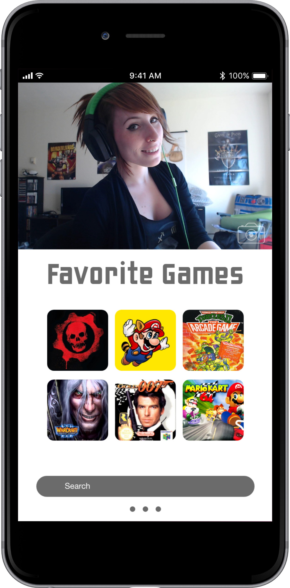
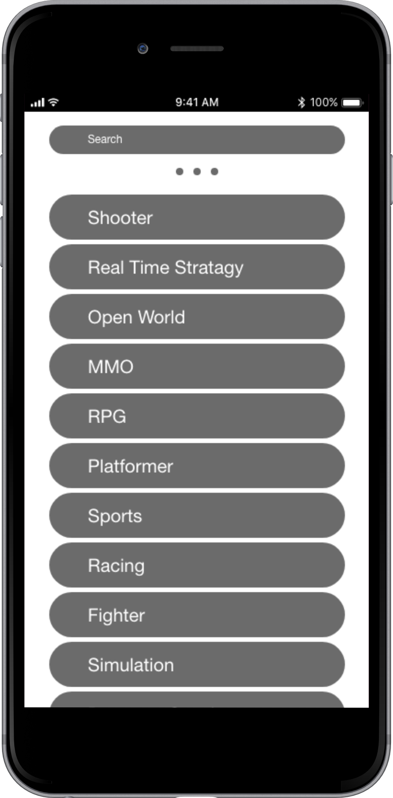
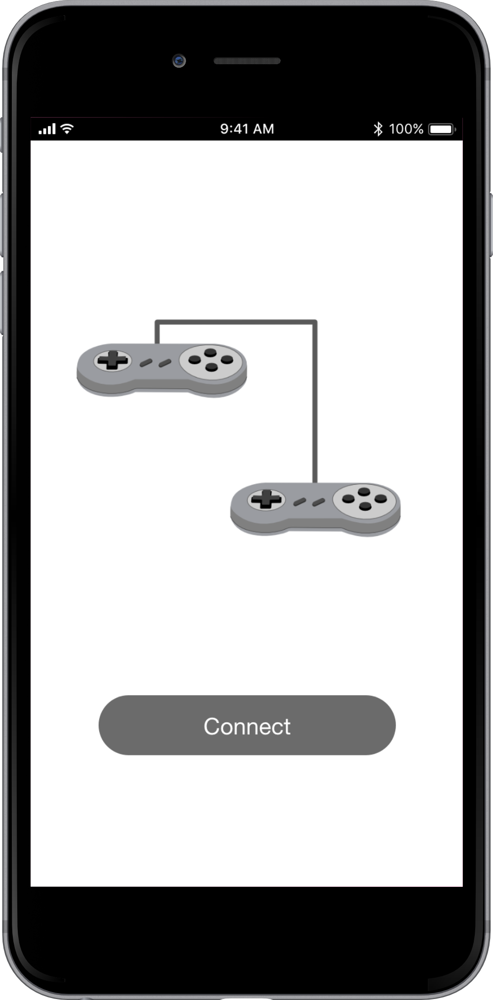

Simple Profiles
This is not Facebook, no need to post your life story. If you need validation find a partner or go to a shrink.

Personality Filter
Don’t want to hear about someone’s politics or maybe you do. Either way we have you covered! Our personality filter lets you search based on interest, chat topics, likes and dislikes.

Game Search
Quickly search for a specific game or browse by genre.

Auto Game Connect
Don’t know how to connect with a friend to play a game? We’ve got you covered, with Auto game Connect a secure connection is made between your games.